File: 000210.gt.txt (if the image is defective, simply delete all Arabic text and the line will be excluded)
وكان أهل فارس قد خرجوا بأموالهم ليردوا بها إلى المدينة ليغزوا عمر بن الخطاب
File: 000211.gt.txt (if the image is defective, simply delete all Arabic text and the line will be excluded)
رضي الله عنه، فقضى الله بها للمسلمين. وكان مع رستم ستمائة ألف ألف، وأصاب
File: 000212.gt.txt (if the image is defective, simply delete all Arabic text and the line will be excluded)
صاحب الفرسين يومئذ سبعا وعشرين ألفا، ولم يعبأوا بالكافور لأنهم ما عرفوه، فباعوه
File: 000213.gt.txt (if the image is defective, simply delete all Arabic text and the line will be excluded)
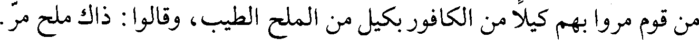
من قوم مروا بهم كيلا من الكافور بكيل من الملح الطيب، وقالوا: ذاك ملح مر.
File: 000214.gt.txt (if the image is defective, simply delete all Arabic text and the line will be excluded)
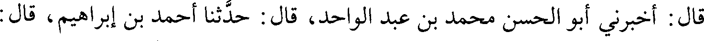
قال: أخبرني أبو الحسن محمد بن عبد الواحد، قال: حدثنا أحمد بن إبراهيم، قال:
File: 000215.gt.txt (if the image is defective, simply delete all Arabic text and the line will be excluded)
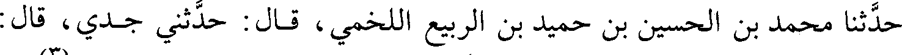
حدثنا محمد بن الحسين بن حميد بن الربيع اللخمي، قال: حدثني جدي، قال:
File: 000216.gt.txt (if the image is defective, simply delete all Arabic text and the line will be excluded)
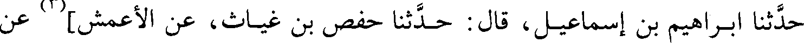
حدثنا إبراهيم بن إسماعيل، قال: حدثنا حفص بن غياث، عن الأعمش](3) عن
File: 000217.gt.txt (if the image is defective, simply delete all Arabic text and the line will be excluded)
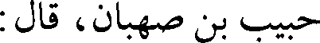
حبيب بن صهبان، قال:
File: 000218.gt.txt (if the image is defective, simply delete all Arabic text and the line will be excluded)
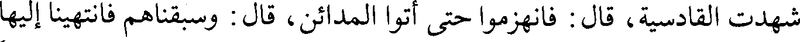
شهدت القادسية، قال: فانهزموا حتى أتوا المدائن، قال: وسبقناهم فانتهيناإليها
File: 000219.gt.txt (if the image is defective, simply delete all Arabic text and the line will be excluded)
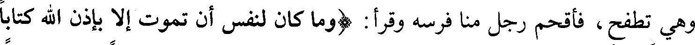
وهي تطفح، فأقحم رجل منا فرسه وقرأ: (وما كان لنفس أن تموت إلا بإذن الله كتابا
File: 000220.gt.txt (if the image is defective, simply delete all Arabic text and the line will be excluded)
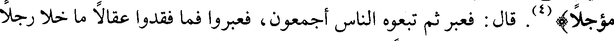
مؤجلا)(4). قال: فعبر ثم تبعوه الناس أجمعون، فعبروا فما فقدوا عقالا ما خلا رجلا
File: 000221.gt.txt (if the image is defective, simply delete all Arabic text and the line will be excluded)
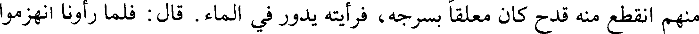
منهم انقطع منه قدح كان معلقا بسرجه، فرأيته يدور في الماء. قال: فلما رأونا انهزموا
File: 000222.gt.txt (if the image is defective, simply delete all Arabic text and the line will be excluded)
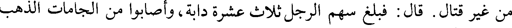
من غير قتال. قال : فبلغ سهم الرجل ثلاث عشرة دابة، وأصابوا من الجامات الذهب
File: 000223.gt.txt (if the image is defective, simply delete all Arabic text and the line will be excluded)
الربيع. فلما قدم على عمر رضي الله عنه، قال: أشيروا علي فيه، قالوا: قد جعل ذلك
File: 000224.gt.txt (if the image is defective, simply delete all Arabic text and the line will be excluded)
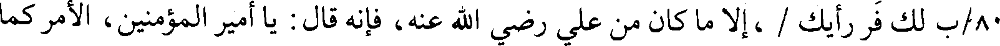
80/ب لك فر رأيك / ،إلا ما كان من علي رضي الله عنه، فإنه قال: يا أمير المؤمنين، الأمر كما
File: 000225.gt.txt (if the image is defective, simply delete all Arabic text and the line will be excluded)
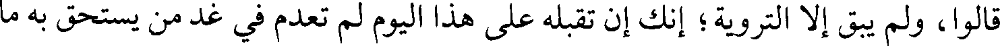
قالوا: ولم يبق إلا التروية؛ إنك إن تقبله على هذا اليوم لم تعدم في غد من يستحق به ما
File: 000226.gt.txt (if the image is defective, simply delete all Arabic text and the line will be excluded)
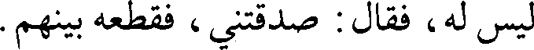
ليس له، فقال: صدقتني، فقطعه بينهم.
File: 000227.gt.txt (if the image is defective, simply delete all Arabic text and the line will be excluded)
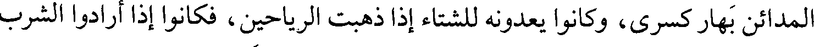
المدائن بهار كسرى، وكانوا يعدونه للشتاء إذا ذهبت الرياحين، فكانوا إذا أرادوا الشرب
File: 000228.gt.txt (if the image is defective, simply delete all Arabic text and the line will be excluded)
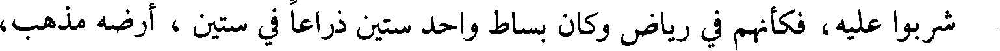
شربوا عليه، فكأنهم في رياض وكان بساط واحد ستين ذراعا في ستين، أرضه مذهب،
File: 000229.gt.txt (if the image is defective, simply delete all Arabic text and the line will be excluded)
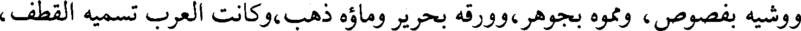
ووشيه بفصوص، ومموه بجوهر، وورقه بحرير وماؤه ذهب،وكانت العرب تسميه القطف،
File: 000230.gt.txt (if the image is defective, simply delete all Arabic text and the line will be excluded)
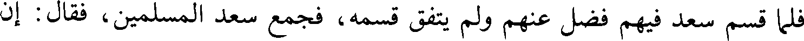
فلما قسم سعد فيهم فضل عنهم ولم يتفق قسمه، فجمع سعد المسلمين، فقال : إن
File: 000231.gt.txt (if the image is defective, simply delete all Arabic text and the line will be excluded)
الله تعالى قد ملأ أيديكم وقد عسر قسم هذا البساط،ولا يقوى على شرائه أحد، فأرى
File: 000232.gt.txt (if the image is defective, simply delete all Arabic text and the line will be excluded)
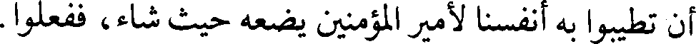
أن تطيبوا به أنفسنا لأمير المؤمنين يضعه حيث شاء، ففعلوا.
File: 000233.gt.txt (if the image is defective, simply delete all Arabic text and the line will be excluded)
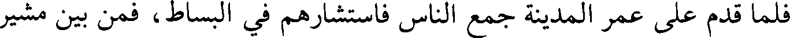
فلما قدم على عمر المدينة جمع الناس فاستشارهم في البساط، فمن بين مشير
File: 000234.gt.txt (if the image is defective, simply delete all Arabic text and the line will be excluded)
بقبضه، وآخر مفوض إليه، وآخر مرقق، فقام علي رضي الله عنه، فقال : لم تجعل
File: 000235.gt.txt (if the image is defective, simply delete all Arabic text and the line will be excluded)
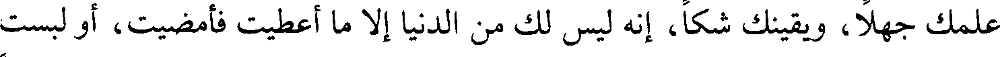
علمك جهلا، ويقينك شكا، إنه ليس لك من الدنيا إلا ما أعطيت فأمضيت، أو لبست
File: 000236.gt.txt (if the image is defective, simply delete all Arabic text and the line will be excluded)
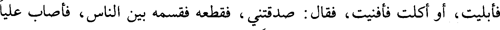
فأبليت، أو أكلت فأفنيت، فقال : صدقتني ، فقطعه فقسمه بين الناس، فأصاب عليا
File: 000237.gt.txt (if the image is defective, simply delete all Arabic text and the line will be excluded)
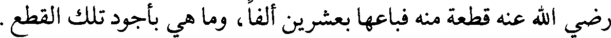
رضي الله عنه قطعة منه فباعها بعشرين ألفا، وما هي بأجود تلك القطع.
File: 000238.gt.txt (if the image is defective, simply delete all Arabic text and the line will be excluded)
أخبرنا الحسين بن القاسم الكوكبي ، قال : حدثنا أبو العباس المبرد، قال: أخبرني]
File: 000239.gt.txt (if the image is defective, simply delete all Arabic text and the line will be excluded)
القاسم بن سهل النوشجاني:
To Save: `Ctrl+s`, make sure to choose `Webpage, complete`!